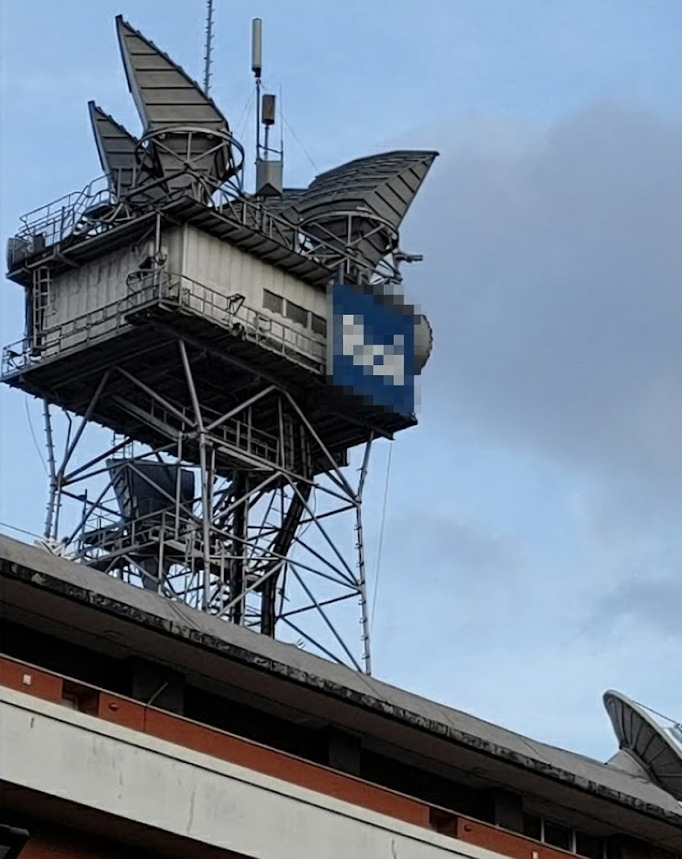
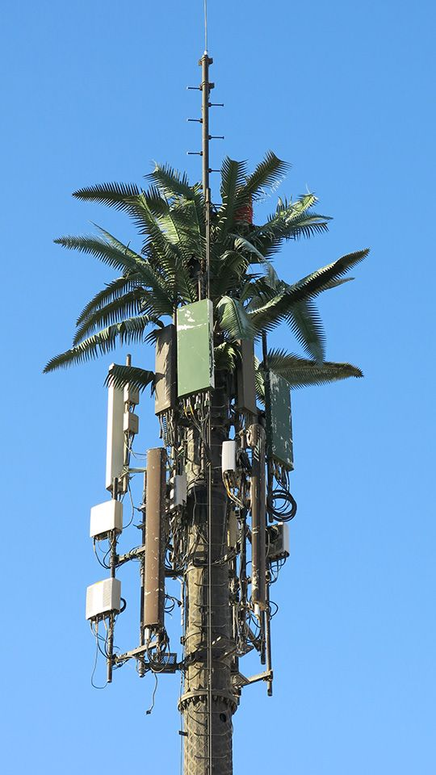
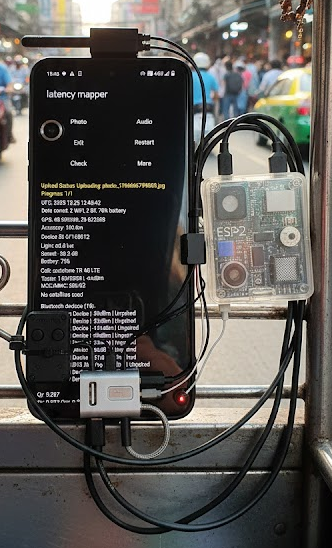
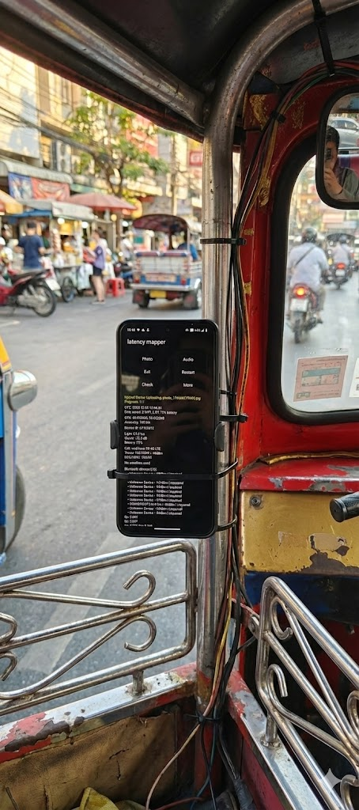
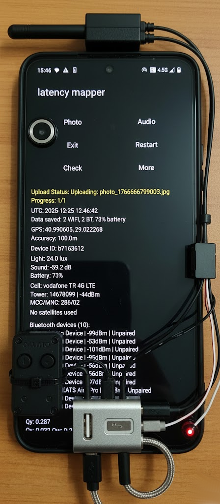
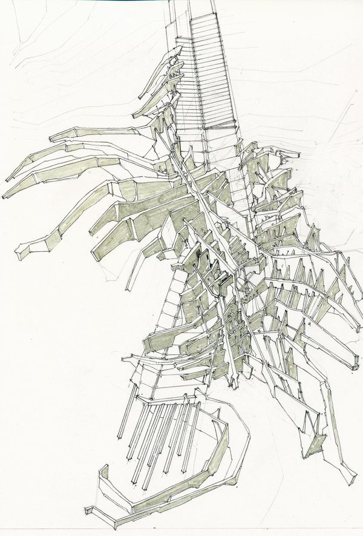
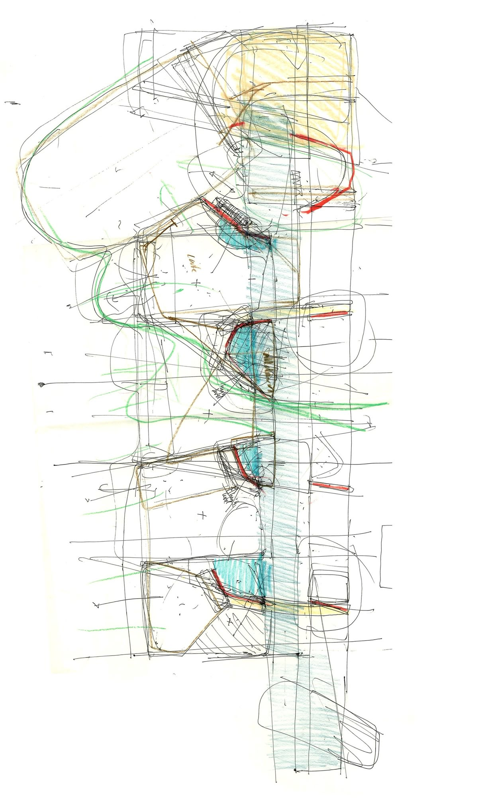
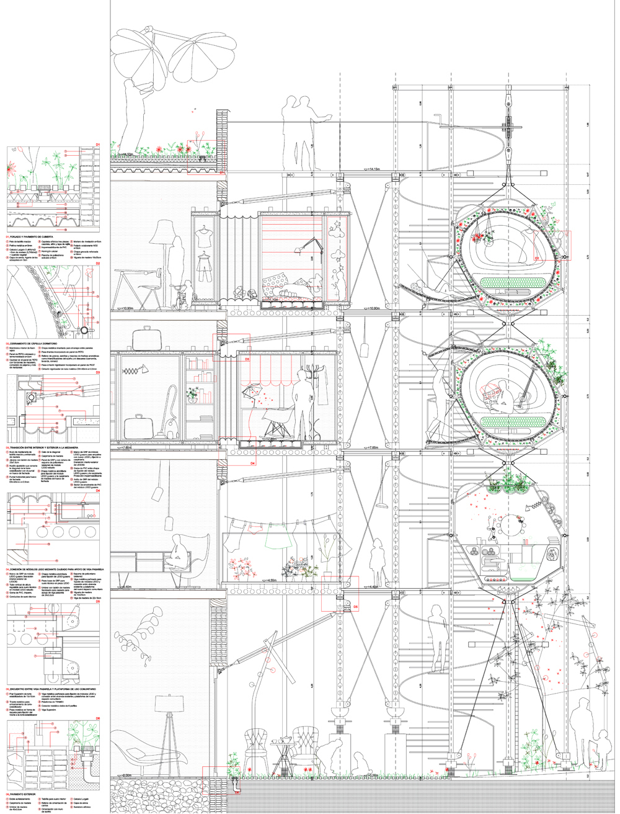
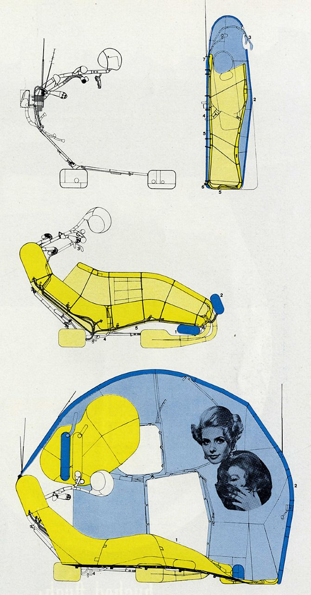

<div class="text_center_fullscreen">
  <div class="home_inner">

    <br>
    <div style="font-size:1.5em;">LOW-LATENCY ARCHITECTURE</div>
    <br>

    INDA | Bangkok • Year 4 Semester 2 • Joris Putteneers, Deniz Guvendi • 2025-2026 International Program in Design and Architecture, Chulalongkorn University.

    <br><br>


<div class="image_center_fullscreen"><span>1.jpeg</span></div>
<br><br>

<div style="font-size:1.2em; font-weight:bold;">Synopsis</div>
<p>In this studio, students will design a parasitic edge-compute cluster in Bangkok through the lens of an architect. With the help of a variety of workshops, students will design a new typology for decentralized, parasitic edge computing nodes in Bangkok. Unlike large centralized datacenters located outside cities, edge nodes are small-scale infrastructures embedded within urban fabric, processing data locally to minimize latency. They should be flexible regarding power supply, scalability, cooling, and energy recovery. Students will map the fragilities of centralized computation within Bangkok's urban planning, stage their architectural breakdown, and propose parasitic, distributed infrastructures responding to the city's growing computational demands while respecting Bangkok's climatic, cultural, and infrastructural conditions. For this studio, an android phone is mandatory. Fortunately, secondhand and cheap android phones can be easily acquired through facebook marketplace or other second hand brokers.</p>

<br><br>

<div class="image_center_fullscreen"><span>2.jpeg</span></div>
<br><br>

<div style="font-size:1.2em; font-weight:bold;">Introduction</div>
<p>Stone masons once carved column capitals, modern architects harnessed the prefabricated components made possible by industrialization. Architecture has always been defined by the prevailing means of production. Data centers are prime examples of the new typologies of the posthuman, buildings of extraordinary meaning that sit at the core of what it means to exist today, but at the same time turn their back on any expression of that significance.</p>
<p>"At a time when our collective history is digital, these blank forms are our generation's great library, our cathedral, our cultural legacy. Every era has had its own iconic architectural typology. The dream commission was once the church, Modernism had the factory and then the house; in the past decade we celebrated the decadent museum and the gallery. Now we have the data centre" (Young, 2019, p. 12).</p>
<p>The most significant architectural typologies in the world are now almost entirely empty of people, forming perhaps the largest cultural landscape in human history. If we follow every fiber-optic cable across the world, we would end up in unfamiliar places: autonomous server farms, power plants, fog nodes, AI superclusters, edge computing facilities, transmission hubs, and data centers. Between 2023 and 2037, IDC projects the global data sphere to double, with 192 trillion gigabytes generated in 2025 alone (IDC, 2023). IoT devices will outnumber humans threefold (IoT Analytics, 2024). The result is profound infrastructural strain. A moment of collapse and reconfiguration.</p>
<p>As hyperscale centers intensify their environmental and material footprint, an alternative emerges: localized, distributed edge computing facilities. Unlike hyperscale centers (10,000 racks, >80 MW capacity), edge data centers are smaller (500 kW-2 MW), located closer to users, optimized for ultra-low latency rather than data preservation. They serve generative AI, IoT, augmented reality, and autonomous mobility, focused on returning results with speed. We now produce approximately the same amount of visual data per day as we did in the entire year of 1999. This growth is unprecedented. While digital storage appears negligible—one terabyte can be stored in a 1x2cm area—upload volumes are massive, with copies made along the way. Major cloud providers build roughly a football field worth of data center space every few days to meet demand, with images, metadata, and telemetry data as primary drivers. This volume is not negligible, and we as architects should be at least partially responsible for these built volumes.</p>
<p>The question of why more centralized data centers are not located in cities largely stems from land scarcity, political and economic barriers, and technological requirements. As computational demand in cities rises, attention shifts to the fastest-growing segment: edge data centers. Centralized data centers or hyperscalers typically house 10,000 racks with capacity exceeding 80 megawatts. Edge data centers have much smaller capacity, ranging from 500 kilowatts to 2 megawatts. They bring computing capability geographically closer to users, minimizing latency. In an era of data-intensive applications, including high-resolution 3D mapping, autonomous vehicles, and social media platforms, speed, connectivity, and reliability through ultra-low latency architecture are crucial to a city's success.</p>
<p>An edge compute node produces lighter load, is distributed and compliant, and should be flexible regarding power supply, scalability, cooling, and energy recovery. Being smaller and highly available, it should be contextually aligned with the city's ecology and climate while reducing computational latency. The main function of an edge node is not to preserve or store data but to complete tasks and return results as quickly as possible. These machines' sole agenda is to improve connectivity and move packets of information across a wider network at higher density and speed.</p>
<p>For architecture, this represents not just technical evolution, but a fundamental design problem: What spatial, material, and urban forms emerge when computation is decentralized? Can small-scale data infrastructures be made visible, adaptive, and compliant rather than hidden behind industrial anonymity? In this studio, we will investigate decentralized, integrated hybrid systems for edge computing in Bangkok. Students will map the fragilities of centralized computation within Bangkok's urban fabric, stage their architectural breakdown, and propose parasitic, distributed, edge-based infrastructures that respond to the growing weight of data in the city while engaging with Bangkok's unique climatic, cultural, and infrastructural conditions. The challenge is to move beyond the traditional typologies and acknowledge their role as the cathedrals of our networked age. Visible, integrated, and responsive to the urban contexts they serve. There are no visual references for an edge compute cluster besides traditional servers, as their physical presence is very sparse and anonymous. Their typology is, so far, undiscovered. Which should reflect on the urgency of these infrastructures.</p>

<br><br>

<div class="columns_3">
  <div class="image_center_fullscreen"><span>3.jpeg</span></div>
  <div class="image_center_fullscreen"><span>4.jpeg</span></div>
  <div class="image_center_fullscreen"><span>5.jpeg</span></div>
</div>
<div style="text-align:center; font-style:italic; font-size:0.9em; color:#666;">camouflaging strategies</div>

<br><br>

<div style="font-size:1.2em; font-weight:bold;">Fieldtrip</div>
<p>Visit to operational data centers in and around Bangkok. Students will gain first-hand knowledge of computational facilities, specifically their operational requirements, physical infrastructure, and standard typologies. Establishing constraints and informing the brief.</p>

<br><br>

<div style="font-size:1.2em; font-weight:bold;">Phase 1: Jan 12-Feb 1 - Fieldwork & Analysis</div>
<p>The first phase starts with a lecture on data centers and their importance in a city context. Together with students, the necessary applications will be installed on their Android phones and computers. A fieldtrip will be organized to one or multiple data centers the same day. Fieldwork uses a mobile sensing app to record latency, device density, GPS coordinates, and ambient data. In phase 2, this data will be processed to generate latency heatmaps. Students will use these maps to allocate a project site. The produced maps are representations of latency information of those specific regions.</p>
<p><strong>L1: Lecture - Data Sovereignty: Joris and Deniz</strong><br>
Week 1: Brief reading, software installation, fieldtrip. Deliverables: working Android app, fieldtrip images and documentation.<br>
Week 2: Groups of 3 brainstorm edge computing syntax and typology infrastructure. Each group generates 50 isometric orthographic AI images exploring typologies, stored with prompts. Deliverables: latency maps update, 50 typology studies with prompts.<br>
Week 3: All images are printed and hung on the class wall alongside the latency map. Students select a site and typology based on the collected data. Deliverables: exhibition, site selection, typology selection.</p>
<p><strong>Deliverables at the end of Phase 1: Group exhibition containing all the generated images.</strong></p>

<br><br>

<div class="columns_3">
  <div class="image_center_fullscreen"><span>6.png</span></div>
  <div class="image_center_fullscreen"><span>7.jpeg</span></div>
  <div class="image_center_fullscreen"><span>8.png</span></div>
</div>
<div style="text-align:center; font-style:italic; font-size:0.9em; color:#666;">latency mapper application testing. image speculation. API can be found here: <a href="http://207.148.77.134/" target="_blank">http://207.148.77.134/</a></div>

<br><br>

<div class="image_center_fullscreen"><span>9.png</span></div>
<div style="text-align:center; font-style:italic; font-size:0.9em; color:#666;">Koehler, D. (2025). Compositional intelligence.</div>

<br><br>

<div style="font-size:1.2em; font-weight:bold;">Phase 2: Feb 2 - Feb 22 - Research & Detail Development</div>
<p>Critical selection of a host infrastructure at the site. Develop the material logic of the new typology, focusing on the tectonics of the parasitic attachment and its hybrid function. Detail models must demonstrate climatically appropriate cooling and resource management strategies within the intervention. (Individual Work)</p>
<p><strong>L2: Lecture: Gilles Callebaut, PhD. 6G networks, network engineering and IoT.</strong><br>
Week 4: Deliverables: Glossary (300-500 words), Research Booklet, WIP detail drawing.<br>
Week 5: Deliverables: Drawing set of proposed detail (parasitic to host infrastructure) 1:25/1:50, sketches, detail drawing.<br>
Week 6 (Midterm): Deliverables Collective: latency map, AI typology exhibition. Individual: Research Booklet (host assessment, climatic strategies, new typologies), System Drawing 1:50, Sections 1:100, Masterplan 1:200.</p>
<p><strong>Deliverables at the end of Phase 2: Revised Research Booklet (documenting host assessment, climatic strategies), System Detail Model (1:5/1:2/1:1), System Drawing (1:50).</strong></p>

<br><br>

<div class="columns_2">
  <div class="image_center_fullscreen"><span>11.jpeg</span></div>
  <div class="image_center_fullscreen"><span>12.jpeg</span></div>
</div>
<div style="text-align:center; font-style:italic; font-size:0.9em; color:#666;">speculative drawing examples.</div>

<br><br>

<div style="font-size:1.2em; font-weight:bold;">Phase 3: Feb 23 - Apr 12 - Design Development & Animation</div>
<p>Full architectural resolution of all systems (cooling, energy, security, data-flow protocols) and the resolution of the public and urban interface. Environmental roles must be structurally integrated into the building's spatial language.</p>
<p>Week 7: Contextual mapping. Deliverables: Masterplan 1:200/1:500, Diagrams, 3D model progression.<br>
Week 8: Architectural Animation Tips & Tricks (Blender). Deliverables: 3D model progression, Section Drawing 1:50 x2, 5 shots.<br>
Week 9: Deliverables: 3D model progression, Elevation 1:50.<br>
Week 10 (Internal Review 1): Deliverables: video + drawing set.<br>
Week 11: Deliverables: scale model 1:20 + drawing set.<br>
Week 12: Deliverables: scale model + drawing set.<br>
Week 13 (Internal Review 2): Deliverables: One-Minute Animation (narrating spatial, temporal, and infrastructural logic), Full Architectural Drawing Set (Plans, Sections, Elevations 1:100, Detail 1:5).</p>
<p><strong>Deliverables at the end of Phase 3: One-Minute Animation, Full Architectural Drawing Set (Plans, Sections, Elevations 1:100, Detail 1:5).</strong></p>

<br><br>

<div class="columns_2">
  <div class="image_center_fullscreen"><span>13.jpeg</span></div>
  <div class="image_center_fullscreen"><span>14.jpeg</span></div>
</div>

<br><br>

<div style="font-size:1.2em; font-weight:bold;">Phase 4: Apr 13 - May 10 - Final Production & Exhibition</div>
<p>Fabrication, final drawing production, and polishing of all presentation materials. Design work must be complete before entering this phase. The focus is on execution.</p>
<p>Week 14 (Songkran): Break / independent work. Deliverables: model and drawing set.<br>
Week 15: Model construction phase. Deliverables: model and drawing set.<br>
Week 16: Deliverables: Final Scale Models 1:2, 1:20.<br>
Week 17 (INDA Parade): Final Exhibition Setup. Deliverables: 1:50 Architectural Model, 1:5 Updated Detail Model, Final Animation, Final Drawing Set (Masterplan 1:200, Plans 1:100, Sections 1:100, Elevations 1:100), Research Booklet.</p>
<p><strong>Deliverables at the end of Phase 4: 1:50 Architectural Model, 1:5 Updated Detail Model, Final Animation, Final Drawing Set (Masterplan 1:200, Plans 1:100, Sections 1:100, Elevations 1:100), Research Booklet.</strong></p>

<br><br>

<div style="font-size:1.2em; font-weight:bold;">Assessment and Grading Criteria</div>
<p>For every phase, internal or external, grading will happen according to the following ratio. Research and Concept (40%), Execution and Representation (60%) Before every review, students are required to upload their work on the google drive that will be provided in class.</p>

<br><br>

<div style="font-size:1.2em; font-weight:bold;">Tools and Requirements</div>
<p>Android phone, Houdini (free apprentice version) for data visualization, Rhino or Blender for modeling. Sketching, drawing, and model-making tools are required.</p>

<br><br>

<div style="font-size:1.2em; font-weight:bold;">Learning Outcomes</div>
<p><strong>Technical Skills:</strong> Mobile sensing + data visualization workflows, Geospatial analysis, Edge computing & distributed systems fundamentals.<br>
<strong>Design Thinking:</strong> Climate-sensitive strategies (cooling, humidity, flood resilience), Parasitic/infrastructural architecture typologies, Public legibility in tech-heavy urban programs.<br>
<strong>Tools:</strong> android phone: unfortunately, app development is easier on android. Fortunately, cheap marketplace android phones are available for < 800 baht. Houdini for procedural modeling/analysis, ComfyUI for AI-driven visualization</p>

<br><br>


<br><br>


<div style="font-size:1.2em; font-weight:bold;">References</div>
<p style="font-size:0.9em; line-height:1.4;">
M. Karels, "Data center power requirements and grid infrastructure limitations," Energy Infrastructure Review, vol. 15, no. 3, pp. 45-62, 2024.<br><br>
Deloitte, "Can US infrastructure keep up with the Al economy?" Infrastructure Analysis Report, 2024.<br><br>
JLL, "Why smaller data centers are taking off," Global Real Estate Insights, 2024. [Online]. Available: <a href="https://www.jll.com/en-us/insights/why-smaller-data-centers-are-taking-off" target="_blank">https://www.jll.com/en-us/insights/why-smaller-data-centers-are-taking-off</a><br><br>
RMI, "Fast, Flexible Solutions for Data Centers," Energy Transition Reports, 2024.<br><br>
D. Sanctis and P. Rossi, "LTE Signals for Device-Free Crowd Density Estimation Through CSI Secant Set and SVD," IEEE Transactions on Wireless Communications, vol. 18, no. 4, pp. 2463-2476, 2019.<br><br>
M. Tilak et al., "Real-World Deployments of Participatory Sensing Applications: Current Trends and Future Directions," International Scholarly Research Notices, vol. 2013, Article ID 583165, 2013.<br><br>
IBM, "What is an Edge Cluster?" IBM Think Topics, 2024. [Online]. Available: <a href="https://www.ibm.com/think/topics/edge-cluster" target="_blank">https://www.ibm.com/think/topics/edge-cluster</a><br><br>
Y. Li et al., "Edge server placement in mobile edge computing," Journal of Parallel and Distributed Computing, vol. 116, pp. 130-144, 2018.<br><br>
X. Chen et al., "An edge server placement based on graph clustering in mobile edge computing," Scientific Reports, vol. 14, Article 27225, 2024.<br><br>
H. Zhang et al., "Cost-Aware Placement Optimization of Edge Servers for loT Services in Wireless Metropolitan Area Networks," IEEE Access, vol. 10, pp. 62298-62315, 2022.<br><br>
Y. Pi et al., "Latency Imbalance Among Internet Load-Balanced Paths: A Cloud-Centric View," Proceedings of the ACM on Measurement and Analysis of Computing Systems, vol. 4, no. 2, Article 32, 2020.<br><br>
Ultralytics, "FLOPs: Machine Learning Model Computational Complexity," Technical Documentation, 2024.<br><br>
Data Center Frontier, "Immersion Cooling Meets Edge Computing," Industry Report, 2023.
</p>

  </div>
</div>